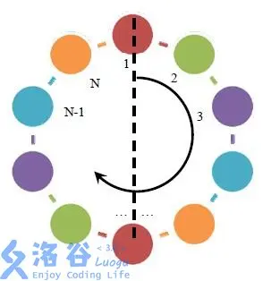
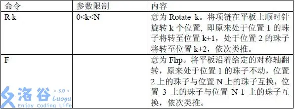
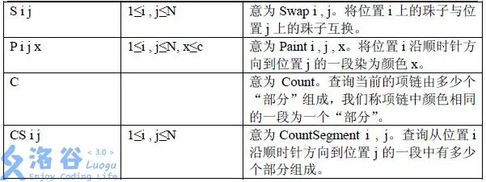
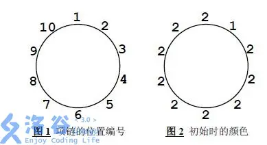
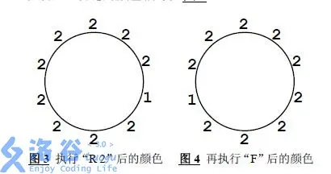

本题来源于：NOI 2007
T 公司是一家专门生产彩色珠子项链的公司，其生产的项链设计新颖、款式多样、价格适中，广受青年人的喜爱。
最近 T 公司打算推出一款项链自助生产系统，使用该系统顾客可以自行设计心目中的美丽项链。该项链自助生产系统包括硬件系统与软件系统，软件系统与用户进行交互并控制硬件系统，硬件系统接受软件系统的命令生产指定的项链。该系统的硬件系统已经完成，而软件系统尚未开发，T 公司的人找到了正在参加全国信息学竞赛的你，你能帮助 T 公司编写一个软件模拟系统吗？
一条项链包含 个珠子，每个珠子的颜色是 中的一种。项链
被固定在一个平板上，平板的某个位置被标记位置 ，按顺时针方向其他位置被记为 2,3,…,N。

你将要编写的软件系统应支持如下命令：


输入文件第一行包含两个整数 ，分别表示项链包含的珠子数目以及颜色数目。
第二行包含 个整数，，表示从位置 到位置 的珠子的颜色，。
第三行包含一个整数 ，表示命令数目。
接下来的 行每行一条命令，如上文所述。
对于每一个 C 和 CS 命令，应输出一个整数代表相应的答案。
5 3
1 2 3 2 1
4
C
R 2
P 5 5 2
CS 4 1
4
1
对于 的数据，，；
对于 的数据，，，。
注意旋转命令旋转“珠子”但不改变“位置”的编号，而反转命令始终以位置 为对称轴。例如当 时，项链上的位置编号如图 1：
但注意此时项链上的位置编号仍然如图 1 所示，于是翻转的对称轴不变。因而再执行一次 F 命令时，项链的颜色如图 4 所示。


CS 命令表示查询一个“线段”中有多少个“部分”。尤其注意当查询的长度等于 时，我们仍然将查询部分作为“线段”理解。
例如在图 4 所示的情况中，执行 CS 1 10 命令，查询从位置 开始到位置 结束的这个长度为 的线段中有多少个“部分”，于是得到返回值 。与之形成对照的是，若执行 C 命令，返回值则为 。